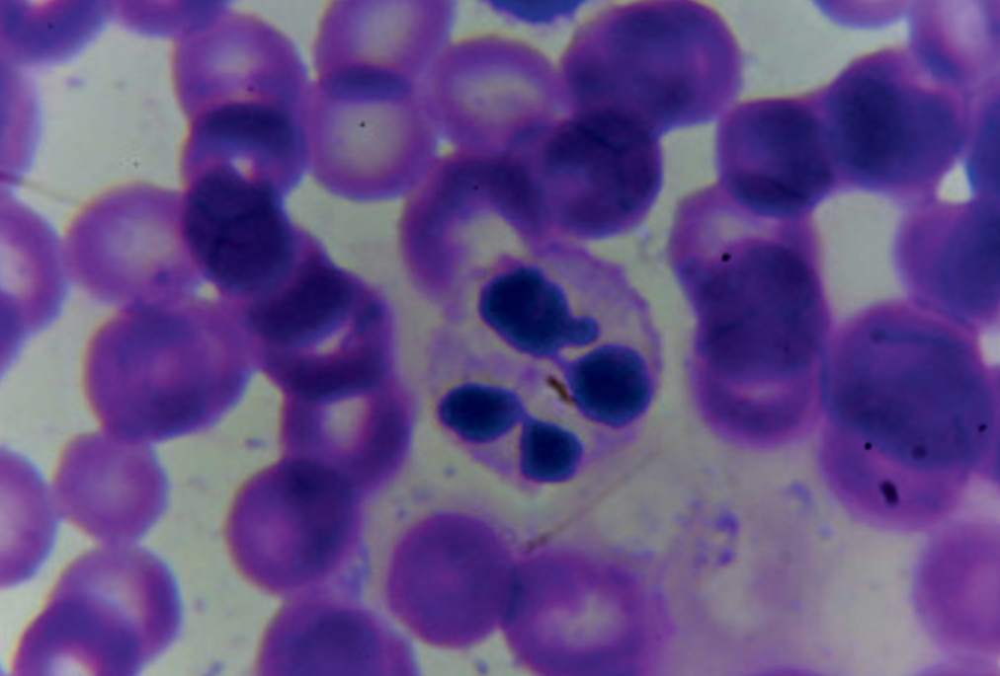
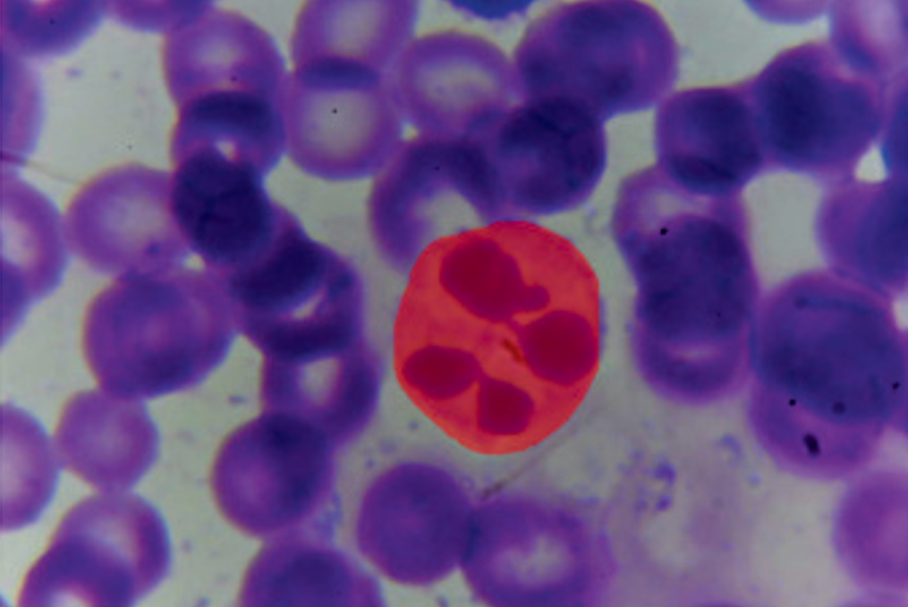
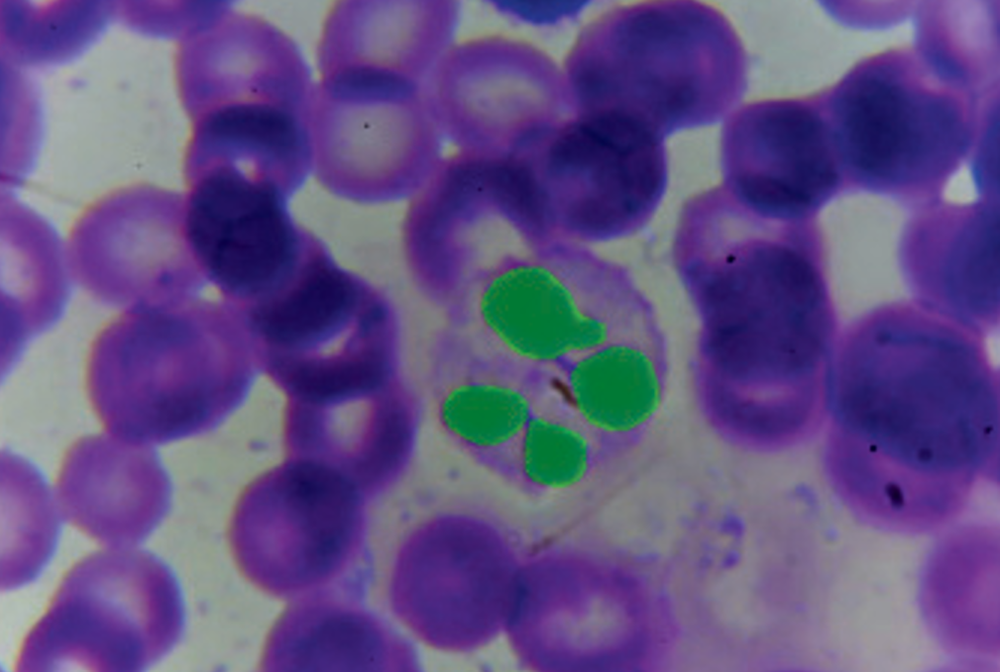

A Multi-Condition Neutrophil Morphology and Segmentation Dataset
The dataset supports multi-mask segmentation tasks, including the extraction of whole cells and specific cellular sub-structures.

Raw microscope image of blood smear.

Entire cell boundary highlighted. Helps detect cell shape and size.

Only nucleus is highlighted. Important for morphology (medical diagnosis feature).
The dataset includes structured biological labels for each cell.
Captures abnormal cell deformation.
Indicates presence of vacuoles in cytoplasm (common in infections or toxicity).
Indicates whether the cell membrane is intact or damaged.
Indicates cell stress or pathological condition.
Neutrophils normally have segmented nuclei. Abnormal lobes indicate disease states.
Key hematology feature. Band = immature neutrophil, Lobed = mature neutrophil.
Ratio between nucleus size and cytoplasm. Very important in cancer detection and cell maturity analysis.
The microscopy images and data compiled in this dataset were acquired from human volunteer blood samples under the ethical approval granted by the Institutional Bioethics Committee of Quaid-i-Azam University, Islamabad, Pakistan, as part of an ongoing collaborative biomedical research initiative. All sample data have been completely de-identified and anonymized to ensure volunteer privacy.
By accessing and downloading this dataset, you agree to comply with the terms and conditions outlined in our Data Usage Agreement. The dataset is provided strictly for academic and non-commercial research purposes.
📄 Read the Full Terms and Conditions (PDF)Please complete the following form to record your access request. The download link will appear once the form has been successfully submitted.
Thank you for submitting the form. You may now access the dataset files.
Download Dataset via Google Drive@dataset{neutroquant_morph_2026,
author = {Shaikh et al.},
title = {NeutroQuant-Morph: A Multi-Condition Neutrophil Morphology and Segmentation Dataset},
year = {2026},
institution = {Institute of Business Administration (IBA) & Quaid-i-Azam University},
}